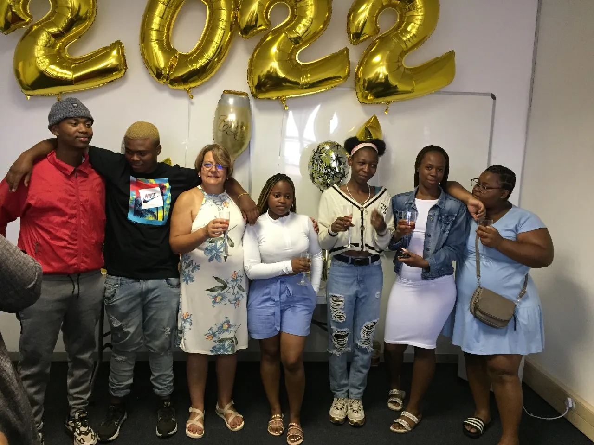
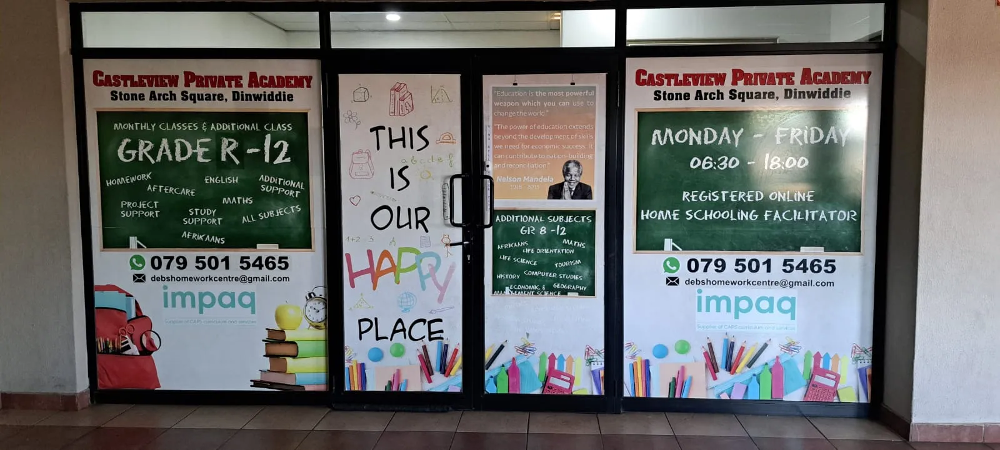
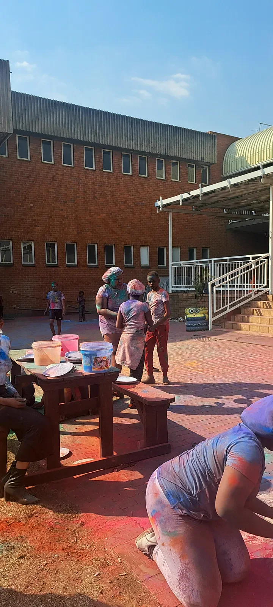
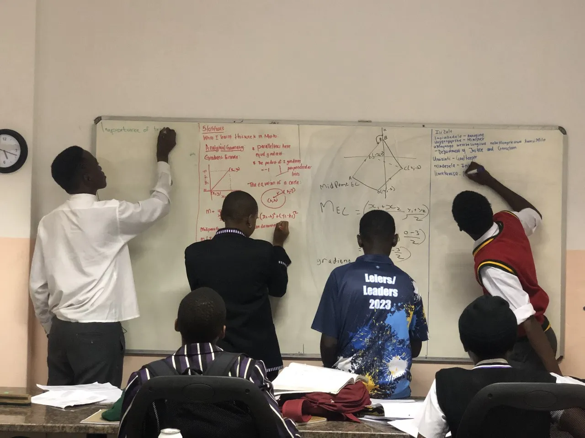

Education with heart, structure and direction.
Homeschooling facilitation, homework support, subject tutoring and exam-focused academic guidance in a small-group environment where learners can be known, supported and challenged.
More than lessons. A place to grow into yourself.
Castleview Private Academy began with a simple idea: when a learner is struggling, they need more than another worksheet. They need somebody who notices, explains, encourages, checks again — and refuses to let them disappear in the crowd.
Our approach combines structure with kindness. Learners follow their registered curriculum pathway while our team facilitates, supports, explains and reinforces the work. For families who need targeted help rather than full-time facilitation, we provide homework support, subject tutoring and exam preparation.
We work from Grade R through Grade 12 and place particular emphasis on confidence, independence, responsible study habits and clear communication with parents.
Castleview is not a curriculum provider. Homeschooling learners remain registered with their chosen curriculum provider while Castleview provides the day-to-day learning support and facilitation.
Read our story
Our approach combines structure with kindness. Learners follow their registered curriculum pathway while our team facilitates, supports, explains and reinforces the work. For families who need targeted help rather than full-time facilitation, we provide homework support, subject tutoring and exam preparation.
We work from Grade R through Grade 12 and place particular emphasis on confidence, independence, responsible study habits and clear communication with parents.
Castleview is not a curriculum provider. Homeschooling learners remain registered with their chosen curriculum provider while Castleview provides the day-to-day learning support and facilitation.
Support built around the learner — not the other way around.
From first foundations to matric preparation, our programmes are designed to provide clarity, accountability and individual attention at every stage.
Free learning tools built to make difficult concepts click.
Explore free interactive learning environments designed to make science and mathematics more visual, practical and engaging.
Interactive science activities
Elemental Lab
Explore the periodic table, chemical concepts, stoichiometry, interactive challenges and practical science activities in a hands-on digital environment.
Free maths practice
MathForge
Build confidence through interactive mathematics practice, visual problem solving and structured activities designed to strengthen understanding rather than memorisation.
Developed as part of Castleview's growing approach to practical, technology-supported learning.


Small enough to notice. Strong enough to make a difference.
Personal attention
Small groups make it easier to identify gaps, answer questions and adapt explanations to the learner in front of us.
Structure without becoming a factory
Clear expectations and routines, while still allowing for different learning speeds, needs and personalities.
Real parent communication
Families need to know what is going well, what needs work and what the next practical step should be.
Whole-pathway support
Grade R foundations through FET and matric revision means learners do not need to reinvent their support system every year.
“Creating Futures on a Foundation of Excellence.”Castleview Private Academy
Learning should look alive.
Real learners. Real classrooms. Real moments of concentration, creativity and community.



Before you enquire.
Which grades does Castleview support?
We support learners from Grade R through Grade 12, including homeschooling facilitation, homework support, subject tutoring and FET-focused academic support.
Is Castleview a curriculum provider?
No. Homeschooling learners must remain registered with their chosen curriculum provider. Castleview provides facilitation, tutoring and day-to-day academic support.
Do you offer in-person support?
Yes. Castleview provides in-person learning support in Germiston, Gauteng.
Do you help with exams and test preparation?
Yes. Support can include revision planning, past papers, focused subject sessions, mock-style preparation and exam technique.
Can you help a learner who has fallen behind?
Yes. We can identify problem areas, reinforce fundamentals and create a more manageable support pathway around the learner's current needs.
How do I enrol or enquire?
Use the enquiry form below or contact Castleview by WhatsApp. We can then discuss the learner's grade, curriculum, subjects and the type of support required.
Tell us about your learner.
The best starting point is simple: tell us the grade, the curriculum or school pathway, and where help is needed. We can take it from there.